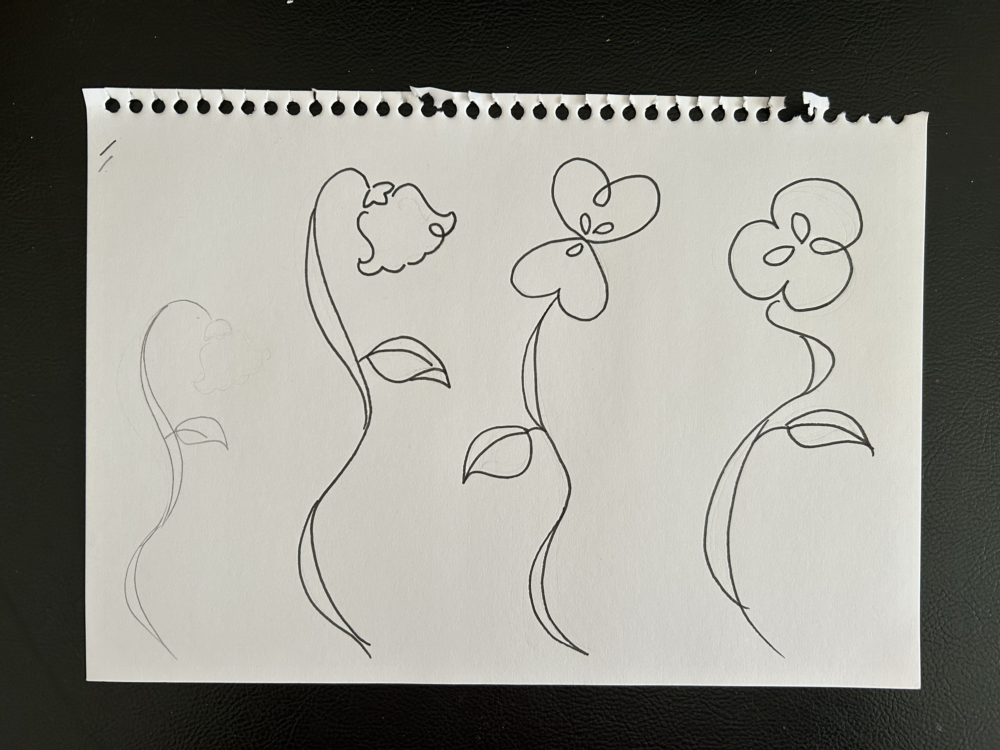
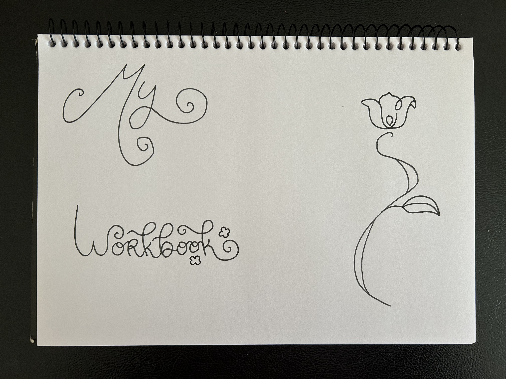
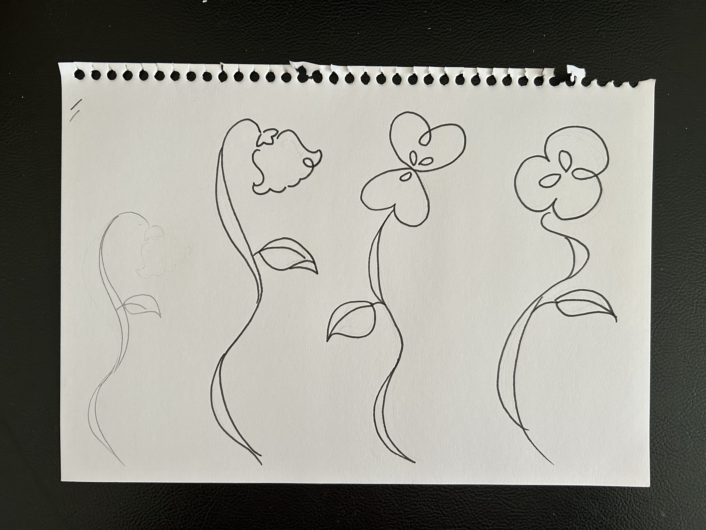
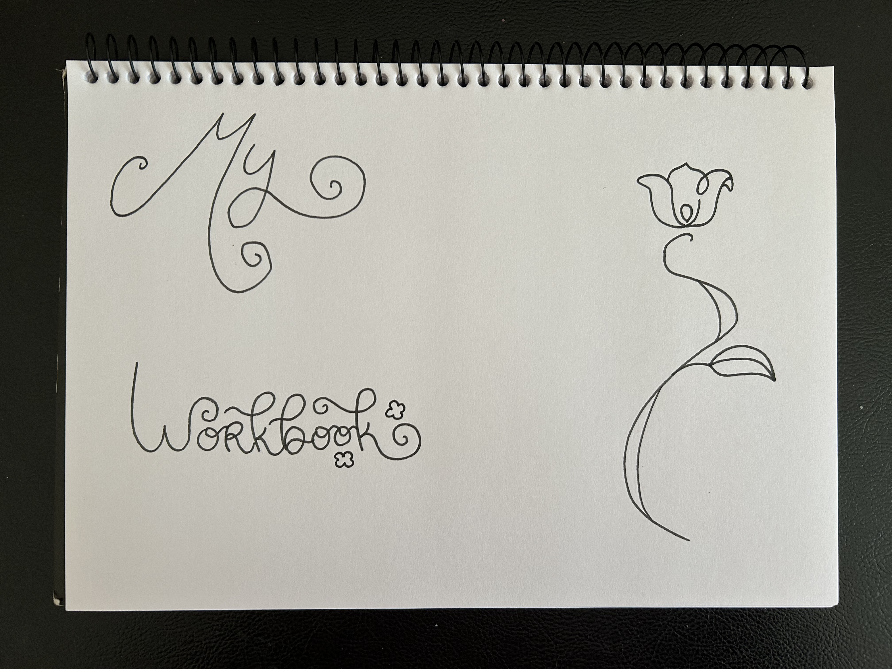
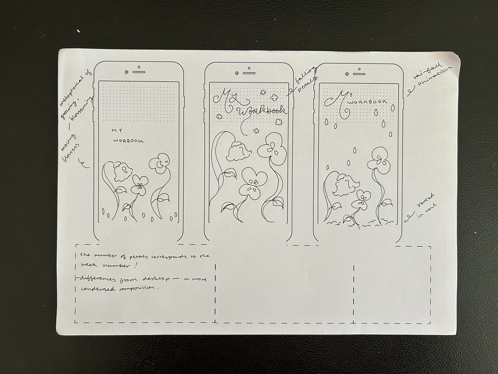

Week 3!
Ideation Drawings- Sketching my Website Components!
 




These are my ideation drawings, where I sketched and experimented with typography and imagery for the components in
my workbook.
For my workbook, I wanted to create a digital garden, where the flowers would act as buttons that lead to my weekly
work.
I wanted the number of flower petals to correspond to the week number — for example, the flower with one
petal would open
to the Week 1 page. I researched different florets and flowers with a single petal, before deciding
the lily of the valley was my
favourite! Despite the lily of the valley being an inflorescence, typically sharing the
stalk with a cluster of blossoms, by working
with a single lily bulb I was able achieve the look of a solitary one
petal flower.
Workshop Activity 1: Fluid Design

Here I sketched my site for mobile devices, based on my desktop design! I wanted to ensure that my site was responsive
and
fluid, with the imagery and text scaling to fit the screen size.